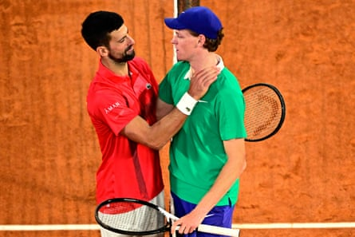
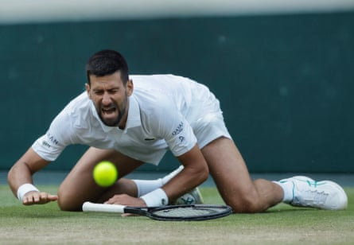

L ess than two hours after his bruising four-set victory over Flavio Cobolli , which sent him through to a men’s record 14th semi-final at the tournament of his dreams, Novak Djokovic’s mind had already cast forward to the monumental challenge ahead. “Sinner and Alcaraz, we know they’re the dominant force right now in tennis,” said Djokovic. “If I want to at least go a step further, I have to beat the No 1 in the world and eventually play Alcaraz in the final.”
This was, of course, a slight faux pas from the 24-time grand slam champion, but it was also revealing. While the winner of Djokovic’s upcoming semi-final duel with Jannik Sinner will probably face Carlos Alcaraz, the two-time defending champion who just won at Roland Garros for a second year in a row does have another match to win first. Alcaraz will take on Taylor Fritz , the fifth seed, in the preceding semi-final. Although Alcaraz will enter Centre Court as the clear favourite, the outcome is far from certain.
It is no wonder that those two players are heavy on Djokovic’s mind. After years of being at the top, the world No 1 for a total of 428 weeks and the player everyone in the world was trying to topple, in this final stretch of his unparalleled career Djokovic is now charged with chasing down two generational talents who still have not reached the peak of their powers. In a world where winning a grand slam title means beating at least one of Sinner or Alcaraz, he can only brace himself for the most difficult outcome.
The fact that a 38-year-old Djokovic, with so many miles in his legs, remains better placed than any other player in the world to disrupt Alcaraz and Sinner is a significant achievement in itself. At the grand slam tournaments, which he has repeatedly described as his primary objective, Djokovic has clearly shown that he is their main rival. In the three major tournaments this year, the veteran has reached three semi-finals, defeating Alcaraz and Alexander Zverev, the world No 3 , in the previous grand slam tournaments to make them.
Novak Djokovic lost in straight sets in the semi-finals of the French Open to Jannik Sinner, but the match was closer than the scoreline suggested.Photograph: Julien de Rosa/AFP/Getty Images
While Djokovic and Alcaraz have continued to go back and forth in their rivalry, the significant shift in the match-up between Djokovic and Sinner has reflected the diverging paths of their careers. The Serb won four of their first five meetings, including two at Wimbledon. Since Sinner recovered from triple match point down to defeat Djokovic in the Davis Cup semi-finals in 2023, however, he has dominated their matches, winning their past four meetings. Until late in the second set of their French Open semi-final last month , Djokovic, arguably the greatest returner of all time, had not broken Sinner’s serve since 2023.
Their match in Paris, won by Sinner in three tight sets , plainly illustrated the mental edge the Italian has built up over Djokovic. After an uncertain start, the Serb forced himself into the match and generated numerous chances that could have shifted the momentum and completely changed the match. In the past, he certainly would have taken them.
But after more than a decade of Djokovic reliably rising to the occasion in the most important moments and pulling away from opponents when it truly mattered, on this occasion it was Sinner who handled the tight moments with incredible poise. “So I get another opportunity,” said Djokovic. “For me, this is what counts actually the most … Being in the last stages of grand slams and playing against the best player in the world right now.”
Novak Djokovic suffered a bad fall in the final game of his victory over Flavio Cobolli in the quarter-finals.Photograph: Tom Jenkins/The Guardian
Despite a frustrating loss, Djokovic left Court Philippe-Chatrier with further proof that his playing level is not far away from that of the world No 1. He believes his greatest challenge lies in the physical task of playing at such a high intensity for such a long time across a best-of-five-sets match. “Physically I hope that I’ll be able to sustain that,” said Djokovic. “That’s more of a concern than game-wise. I think game-wise the way I’m feeling the ball when I’m fit and ready, I feel like I can go toe to toe with those guys and even beat them if I’m playing my best.”
For this reason, Djokovic has long considered Wimbledon his best chance of winning his 25th grand slam title and becoming the oldest major champion in history. The less attritional nature of grass-court tennis just makes the surface more forgiving to a player with so many miles in his legs, allowing him to use his serve, encouraging him to play even more offensively and to shorten points by closing down the net more frequently.
After his own desperate struggles against Grigor Dimitrov when he trailed by two sets and was nursing a sore elbow before the Bulgarian’s shocking retirement due to sudden injury, Sinner brushed his own physical concerns away with a ruthless three-set win over Ben Shelton on Wednesday.
Djokovic, who has his own injury concerns and first delayed and then cancelled his scheduled practice session at the All England Club on Thursday, will have to sustain an incredibly high level just to get close to the No 1, but so often over the years these are the occasions that have inspired such performances from him.